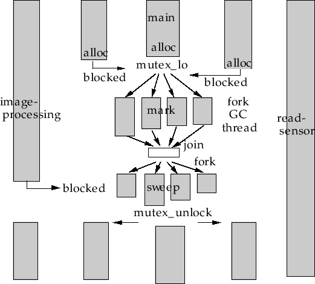

Subsections
マルチスレッド
マルチスレッドは、Solarisオペレーティングシステム上の
並列プログラミングや非同期プログラミングの機能である。
非同期プログラミングは、プログラムの状態と無関係に発生する
様々なセンサを経由した外部イベントに応答するためのプログラムに要求される。
並列プログラミングは、画像処理や経路計画の干渉チェックのような
プロセス向きの計算の効率を改善する場合に効果的である。
マルチスレッドEuslisp(MT-Eus)は、複数のプロセッサを持ったSolaris 2
オペレーティングシステム上で動作する。
Solarisのスレッドは、 共有メモリと異なった環境を持つような従来の
UNIXプロセスをCPUに配置するためのユニットである。Solaris OSによって提供されるスレッドのライブラリは、
それぞれのスレッドを単一のLWP(light weight process)に配置する。
このプロセスがカーネルのリソースである。
UNIXのカーネルは、それぞれのスレッドに割り当てられたスレッドの優先権に
基づいて複数の物理CPUにLWPの配置を計画する。
図5は、スレッドとLWPとCPUの関係を表わしたものである。
Euslispの環境およびメモリ管理の設計について、
マルチスレッドの能力を引き出すために２つの大きな変更がされた。
MT-Eusは、それぞれのスレッドに対し個別にスタックと環境を配置する。
そのため、他のスレッドと独立に実行することができる。
symbolやconsのようなオブジェクトは、これまでのEuslispのように
共有ヒープメモリ上に配置される。
したがって、block labelやcatch tagやローカル変数のような
スレッドの個別データは、他のスレッドから保護される。
ところが、グローバル変数によって示される値（オブジェクト）は、
情報の変更が許可されているすべてのスレッドから見ることができる。
Figure 5:
Solarisオペレーティングシステムのスレッドモデル
|
|
環境はC-stackとbinding-stackおよびlambda, block, catch, let, flet
などのローカルブロックに繋がるフレームポインタにより構成されており、
新しいスレッドが作成されたときに設置される。
複数の環境が本当のマルチプロセッサマシンの上で同時に
動作できるので、グローバル変数の中の現在の環境に対して単一なポインタ
を持つことができない。
むしろ、環境のポインタを最上位の評価から低レベルのメモリ管理に変換するために、
すべての内部関数にもう一つ引き数を付け加えなければならない。
EusLispは、すべての型のオブジェクトに対して単一のヒープの中で
フィボナッチバディを用いたメモリ管理方法を採用している。
異なったメモリ要求を持つプログラムを実行した後、
フィボナッチバディが様々な大きさのオブジェクトを等しく高速に配置することができ、コピーなしに素早くガーベージコレクトができ、
かつ、高いメモリ利用率（内部損失が10〜15%で外部損失は無視できる）
を示すことを確信した。
マルチスレッドのためには、2つ目のポイントすなわちコピーなしの
ガーベージコレクトが重要である。
もし、オブジェクトのアドレスがガーベージコレクトのコピーにより
変化したならば、すべてのスレッド環境のスタックおよびCPUのレジスタ
内のポインタを新しいアドレスに書き換えなければならない。
しかし、この書き換えは不可能かあるいは大変困難である。
すべてのメモリ配置要求は、低レベルのalloc関数によって処理される。
allocは、mutex-lockingをする。なぜなら、大きさを持たないリストの
グローバルデータベースを扱うからである。
ガーベージコレクトの始まる時期およびどのスレッドによってガーベージコレクトが
生じるのかを予言できないので、
すべてのスレッドは突発的に起こるガーベージコレクトのために
準備をしておかなければならない。
生きているオブジェクトへのすべてのポインタは、ゴミとして掃除されない
ように保護するためいつでもガーベージコレクトからアクセスできるよう
調整されなければならない。
これは、スタックの上に保存されていることを信用する代わりに、
それぞれの環境の固定されたスロットの中に極最近に配置されたオブジェクトに
対するポインタを蓄積することによって達成される。
図 6は、スレッドのメモリ要求とforkされたガーベージコレクト
内部でのmarkingおよびsweepingを並列に行っている流れ図を示したものである。
メモリ要求およびポインタの処理を行わないスレッドはガーベージコレクトと並列に
実行することができ、信号処理や画像獲得のような低レベルのタスクの
実時間応答を改善することに注意すること。
Figure 6:
並列スレッドのメモリ要求とガーベージコレクトに並列実行
|
|
Solarisにおいて複数のプロセッサ上で並列にプログラムを実行するためには、
そのプログラムは関数の集まりとして書かれる必要がある。
その関数はそれぞれプロセスの中で動的に作成されるスレッドによって
実行される。
スレッドを作成するために要求される時間は、プロセスを作成するよりも
速くなければならないが、スタックを配置しスタックのオーバーフローを
発見するためのページ属性を設定した後にスレッドが動き始めるまでに
Euslispにおいて数ミリ秒かかる。
この遅れは関数実施と比較して我慢できないため、
評価時間におけるシステムコールに対する所要時間を排除する目的で、
あらかじめmake-thread関数により十分な数のスレッドが作られ、
システムのスレッドプールに置かれる。
スレッドプールの中のそれぞれのスレッドは、図7で示されるように
スレッドIDと同期のためのセマフォと引き数や評価結果を転送するためのスロット
から構成されるスレッドオブジェクトにより表現される。
Figure 7:
スレッド間で制御やデータを受け渡すためのスレッドオブジェクト（左）とスレッドプール内に置かれたスレッドの集まり（右）
|
|
スレッドによる並列実行の配置のために、スレッド関数が使用される。
スレッドは、スレッドプールから1つの空きスレッドを取り、
共有メモリを経由して引き数を渡し、図7に示されるような
セマフォ信号によりスレッドを立ち上げ、
停止することなしに呼出側へスレッドオブジェクトを返す。
立ち上げられたスレッドは、呼び出したスレッドと並列に実行され、
引き数を評価し始める。
呼出側は、forkされたスレッドから評価結果を受けとるためにwait-threadを
使用する。
plistマクロは、引き数の並列評価を記述するために大変便利な書式である。
plistは、それぞれの引き数を評価するためにスレッドを割り当て、
すべてのスレッドが評価し終わるのを待って結果をリストアップする。
MT-Eusは、mutex lock, condition variable, セマフォと呼ばれる
3種類の同期手法を持っている。
mutex lockは、スレッド間の共有変数の連続アクセスのために使用される。
condition variableは、ロックの仮開放あるいは再獲得によってmutex-lockされた
部分の条件がtrueになることを待つことをスレッドに許可する。
セマフォは、イベントの発生を通知するためあるいはリソースの分割を制御するために
使用される。
Solarisのカーネルが時間分割スケージューリングを基本として何気なしにタスク
切り替えを発生するのと異なり、
これらの同期手法は、任意の環境切り替えを引き起こす。
Figure 8:
同期障壁と同期メモリポート
|

|
barrier-synchは、複数のスレッドを同時に同期させるための機構である
(図 8)。
この目的において、barrierクラスのインスタンスが作成され、
同期に関係するスレッドがオブジェクトに登録される。
その後、それぞれのスレッドはbarrierオブジェクトに:waitメッセージを
送り、そのスレッドは停止する。
オブジェクトに登録された最後のスレッドが:waitメッセージを送ったとき、
待ちが解除され、すべての待ちスレッドがTの返り値を得る。
barrier-syncは、マルチロボットシミュレーションのグローバルタイムという
重要な役割を演じている。
同期メモリポート(synch-memory-port)は、
スレッド間でデータを交換するための1種のストリーム
である(図 8)。
プロセス内のすべてのスレッドはヒープメモリを共有しているので、
もし1つのスレッドがグローバル変数にオブジェクトを割り当てた場合、
直ちに他のスレッドから見れるようになる。
しかしながら、共有メモリはグローバルデータが更新されたという
イベントを送るための能力が不足している。
同期メモリポートは、共有オブジェクトをアクセスするための
この同期機能を保証する。
同期メモリポートオブジェクトは、1つのバッファスロットと同期読み書きの
ために使用される2つのセマフォによって構成されている。
実時間プログラムは、予定された時間に実行される関数や、
特定の間隔で繰り返される関数をしばしば要求する。
これまでのEusLispは、Unixのインターバルタイマーによって
定期的に生成される信号によって発生するユーザー関数を
実行することができた。
MT-Eusにおいて、この実行はデッドロックを引き起こす。
なぜなら、割り込みがmutex-lockされたブロック内から発生する可能性がある。
したがって、制御はevalの最初のように安全な場所で渡されなければ
ならない。
上記の同期によって引き起こされる遅れを避けるために、
MT-Eusはセマフォを経由して信号通知(signal-notification)も
提供する。
言い換えれば、信号関数は呼び出されるかあるいは信号の到着を知らせる
関数あるいはセマフォのどちらかをとる。
セマフォは、低レベルで告示されるので、
同期により隠れているところは最小である。
以下に示すものは、マルチスレッド機能を用いた画像処理のプログラム例である。
画像入力スレッドとフィルタースレッドが生成される。
samp-imageは、33msec毎に通知されるsamp-semを待つことにより、
定期的に画像データをとる。
2つのスレッドはthread-portの読み書きを通じて同期する。
filter-imageは、フィルターの並列計算のために複数のスレッドを使用している。
(make-threads 8)
(defun samp-image (p)
(let ((samp-sem (make-semaphore)))
(periodic-sema-post 0.03 samp-sem)
(loop (sema-wait samp-sem)
(send p :write (read-image))))
(defun filter-image (p)
(let (img)
(loop (setf img (send p :read))
(plist (filter-up-half img)
(filter-low-half img)))))
(setf port (make-thread-port))
(setf sampler (thread #'samp-image port))
(setf filter (thread #'filter-image port))
表 3は、32CPUで構成されるCray Superserverの上で測定
した並列実行効率を示したものである。
コンパイルされたフィボナッチ関数において線形な並列度が得られた。
なぜなら、共有メモリへのアクセスがなく、それぞれのプロセッサのキャッシュ
メモリに十分ロードできるほどちいさなプログラムであったためである。
それに反して、同じプログラムをインタープリターで実行したとき、
キャッシュメモリを使い果たしたため、
線形な高効率を達成することができなかった。
さらにまた、頻繁に共有メモリを参照するようなプログラムや
メモリ配置を要求するようなプログラムは1個のプロセッサで実行した
ときよりも良い性能を得ることができなかった。
これは、頻繁なキャッシュメモリの入れ替えが原因と考えられる。
Table 3:
マルチプロセッサ上で実行されたプログラムの並列度
| processors |
1 |
2 |
4 |
8 |
GC (ratio) |
| (a) compiled Fibonacci |
1.0 |
2.0 |
4.0 |
7.8 |
0 |
| (b) interpreted Fibonacci |
1.0 |
1.7 |
2.7 |
4.4 |
0 |
| (c) copy-seq |
1.0 |
1.3 |
0.76 |
0.71 |
0.15 |
| (d) make-cube |
1.0 |
0.91 |
0.40 |
0.39 |
0.15 |
| (e) interference-check |
1.0 |
0.88 |
0.55 |
0.34 |
0.21 |
スレッドは、計算を割り当てる単位であり、普通lisp書式を評価する
ための単位である。
Euslispのスレッドは、threadクラスのインスタンスによって
表現される。
このオブジェクトは、内容を表現するスレッド全体というよりはむしろ、
実際に引き数と結果を渡すためのスレッドの
制御ポートであり、評価を始めるものである。
sys:make-thread num &optional (lsize 32*1024) (csize lsize) [関数]
-
-
lsizeワードのlispスタックとcsizeワードのC-スタックを持つ
スレッドをnum個だけ生成し、システムのスレッドプールに
置く。
スレッドプール内のすべてのスレッドは、sys:*threads*に束ねてあり、
make-threadが呼び出されたときに拡張される。
thread関数によって、計算はスレッドプールの中で空いたスレッドの
１つに割り当てられる。
したがって、指定された計算がどのスレッドに割り当てられるか
制御できないため、スレッドのスタックサイズを変更する方法が無い。
sys:*threads* [変数]
-
-
make-threadによって作成されたすべてのスレッドのリストを持つ。
sys::free-threads [関数]
-
-
スレッドプール内の空いたスレッドのリストを返す。
もし、結果がNILならば、スレッドへのタスクの新しい付託は現在実行されている
スレッドのどれかの評価が終了するかあるいは
make-threadによってスレッドプールに新しいスレッドを生成するまで
停止される。
sys:thread func &rest args [関数]
-
-
スレッドプールから空いたスレッドを1つ取り出し、
(func . args)の評価のためにそれを割り当てる。
sys:threadは、argsを展開したリストにfuncを適用
するが、関数の適用結果を受け取らないため、
非同期のfuncallとみなすことができる。
むしろ、sys:threadはfuncallに割り当てられたスレッド
オブジェクトを返すので、実際の結果はsys:wait-threadによって
後から得ることができる。
(defun compute-pi (digits) ...)
(setq trd (sys:thread \#'compute-pi 1000)) ;assign compute-pi to a thread
... ;; other computation
(sys:wait-thread trd) ;get the result of (compute-pi 1000)
sys:thread-no-wait func &rest args [関数]
-
-
空いたスレッドの1つに計算を割り当てる。
スレッドは、wait-threadされることなしに、
評価が終了したとき、スレッドプールに戻される。
sys:wait-thread thread [関数]
-
-
threadにsys:thread関数によって与えられたfuncallの評価が
終了するのを待ち、その結果を受け取り、返す。
もし、スレッドにsys:threadによって評価が割り当てられたならば、
sys:wait-threadは、必須である。
なぜなら、スレッドは結果を転送し終わるまでスレッドプールに戻らない
ためである。
sys:plist &rest forms [マクロ]
-
-
異なったスレッドにより並列にformsを評価し、
すべての評価が終了するのを待ち、
結果のリストを返す。
sys:plistは、リスト化されたそれぞれのformが関数呼び出しされる
ことを除いて、parallel-listとしてみなされるだろう。
Solarisオペレーティングシステム内には、マルチスレッドプログラムのために
4つの同期手法がある。
Euslispは、mutex-lockとcondition variableとセマフォを提供している。
reader-writer lockは実現されてない。
これらの手法に基づいて、同期メモリポートや同期障壁のような
高レベルの同期機構が実現されている。
sys:make-mutex-lock [関数]
-
-
mutex-lockを作り、返す。
mutex-lockは、6つの要素を持つ整数ベクトルで表現されている。
sys:mutex-lock mlock [関数]
-
-
mutex-lockのmlockをロックする。
もし、mlockが既に他のスレッドからロックされているなら、
mutex-lockはロックが外されるまで待つ。
sys:mutex-unlock mlock [関数]
-
-
mlockを解除し、このロックを待っている他のスレッドの内の１つが再び実行され始める。
sys:mutex mlock &rest forms [マクロ]
-
-
mutex-lockとmutex-unlockは、組みで使用されなければならない。
mutexは、重要な部分をひとまとまりにしたマクロである。
mlockは、評価するformsが評価される前にロックされる。
そして、評価が終了したときに、ロックが解除される。
このマクロは、以下のprogn formに展開される。
unwind-protectは、formsの評価中にエラーが発生したとき
でさえ、ロックの解除を保証するために使用されることに注意すること。
(progn
(sys:mutex-lock mlock)
(unwind-protect
(progn . forms)
(sys:mutex-unlock mlock)))
sys:make-cond [関数]
-
-
4つの要素を持つ整数ベクトルであるcondition variableオブジェクトを
作る。condition variableの返り値としては、ロックされてない状態でである。
sys:cond-wait condvar mlock [関数]
-
-
condvarに信号が出されるまで待つ。
もし、condvarが他のスレッドによってすでに獲得されていたならば、
mlockを解除し、condvarに信号が出されるまで待つ。
sys:cond-signal condvar [関数]
-
-
condvarで示されるcondition variableに信号を出す。
sys:make-semaphore [関数]
-
-
20の要素を持つ整数ベクトルによって表現されるセマフォオブジェクトを作る。
sys:sema-post sem [関数]
-
- semに信号を出す。
sys:sema-wait sem [関数]
-
-
semに信号が来るまで待つ。
sys:barrier-synch [クラス]
:super propertied-object
:slots threads n-threads count barrier-cond threads-lock count-lock
-
- 同期障壁のための構造を表現する。
同期を待っているスレッドは、thread-lockによって
相互に排除されるthreadに置かれる。
barrier-synchオブジェクトが生成されたとき、
countは、ゼロに初期化される。
同期しているスレッドは、:addメッセージを送ることによって、
threadsリストに置かれる。
このbarrier-synchオブジェクトに:waitを送ることは、
countを増加させることの原因となり、
送られたスレッドは待ち状態になる。
threadsの中のすべてのスレッドに:waitメッセージが送られたとき、
待ちが解除され、すべてのスレッドの実行が再び始まる。
同期は、count-lockのmutex-lockとbarrier-condのcondition-variable
の組み合わせによって実行される。
:init [メソッド]
-
- このbarrier-synchオブジェクトを初期化する。
2つのmutex-lockと1つのcondition-variableが生成される。
:add thr [メソッド]
-
- threadsリストの中にthrスレッドが追加される。
:remove thr [メソッド]
-
- threadsリストの中からthrスレッドを削除する。
:wait [メソッド]
-
- threadsリストの中のすべてのスレッドに:wait
が配布されるのを待つ。
sys:synch-memory-port [クラス]
:super propertied-object
:slots sema-in sema-out buf empty lock
-
- 1方向の同期されたメモリポートを実現する。
このオブジェクトを通じてデータを転送するために、2つのスレッドを同期させる。
転送制御は、セマフォを用いて実現されている。
:read [メソッド]
-
-
このsynch-memory-portにバッファされているデータを読む。
もし、まだ書かれていなかったならば、:readは停止する。
:write datum [メソッド]
-
-
バッファにdatumを書き込む。
1ワードのバッファのみ存在するので、
もし他のデータが既に書かれておりまだ読まれていなかったならば、
:writeは:readによってそのデータが読み込まれるまで待つ。
:init [メソッド]
-
- このsync-memory-portを初期化する。
これには2つのセマフォが生成され、:write動作が可能な状態になっている。
Travis CI User
2017-03-07
![\includegraphics[width=120mm]{fig/parathreads.ps}](jmanual-img38.png)